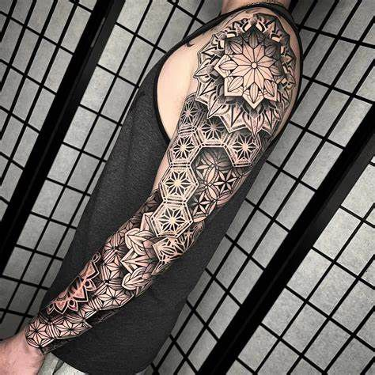
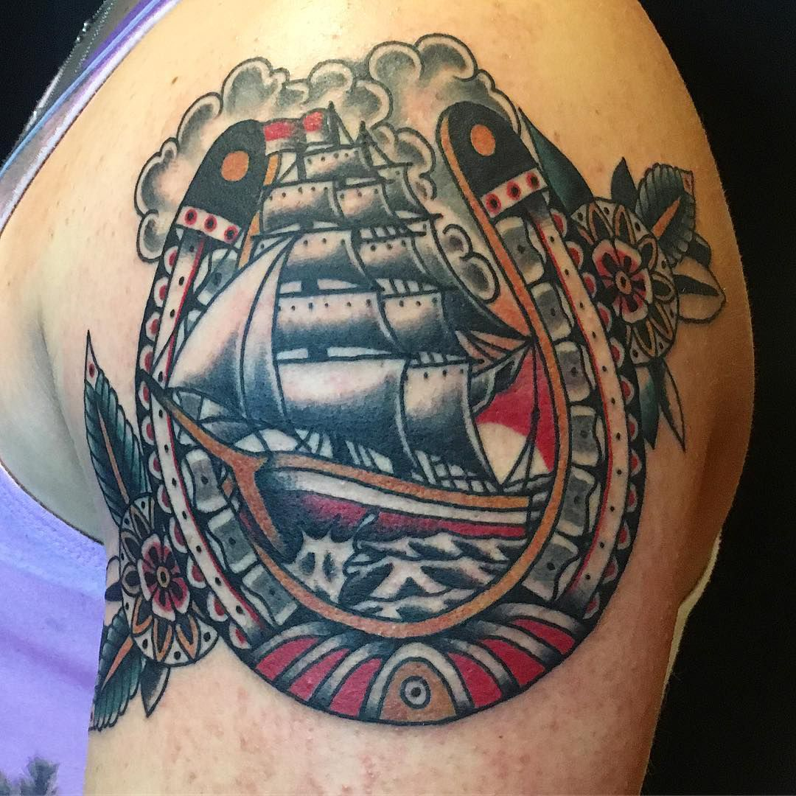
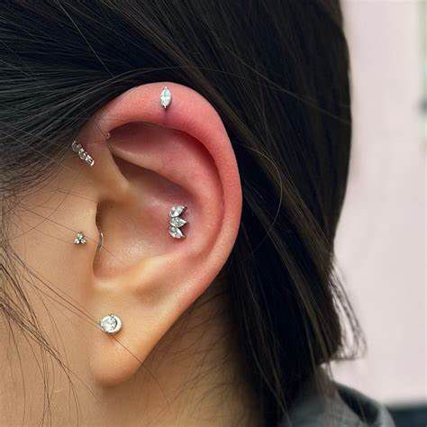

Geometric Tattoo
Minimalist designs with geometric patterns

Traditional Tattoo
Classic designs with traditional motifs

Religion Tattoo
Modern religion designs with bold patterns

Premium Ear Piercing
Professional piercing service with premium jewelry
© 2024 INORU Tattoo & Piercing Studio. All rights reserved.